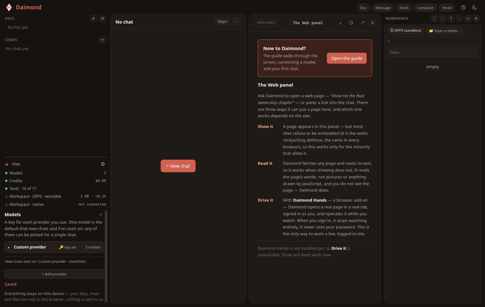

The interface
A tour of the screen: three zones, and what each part does. Once you know the zones, everything in Daimond has a place.

The rail — left
The rail is split by a divider you can drag but not remove. Above the divider is what you are working on; below it is the admin panel.
Foci
The pursuits you keep. A Focus holds what a chat taught you about a piece of work, so the next stretch of it starts from what you know. Search and tag them as they accumulate. Add one with the ＋ beside Foci.
Chats
Your conversations. Start one with the ＋ beside Chats; click any chat to bring it back to the centre.
Foci and chats are covered in full on Chats & Foci.
The admin panel
Below the divider, the admin panel is the state of the machine at a glance. Settings live here rather than in a pop-up, so a chat stays live beside them — you can ask Daimond what an app password is while the box asking for one is still on screen. Each row that can be acted on is a button that opens the thing it names:
- An identity row — who you are on this device — with a settings cog beside it.
- A Models row, which counts the providers you have connected and opens the Models form.
- A Credits row, showing your balance and opening the Credits view.
- A Tools · N of M row, showing how many tools are available and opening the Tools panel.
- Workspace storage rows, showing how much space your files use, and — where the browser can open one — a real folder on your device.
The stage — centre
The stage is the middle zone. Its occupants take the stage on their own or two side by side, and never dock at the right. The point of two seats is that you never leave the conversation to do a thing: read the message, watch the page, read the document, with the daimon still beside it to be asked about it.
AI — the daimon
The conversation. This is the default occupant and it returns whenever the stage would otherwise be empty. Your messages, the answers, and any tool steps appear here.
Web
A web page, where a page can be shown or driven. Opened from the header or when Daimond follows a link.
Doc
A compiled document (such as a PDF), given room to read.
Message
A single mail message, opened from Email, read beside the chat.
Tools
What Daimond can do, and what the rest would cost. Opened from the Tools row.
Compose
Writing a mail message. Nothing here sends by itself — only the Send button puts mail on the wire, and only you can press it.
Each stage guest has a header with a close button. A closed panel does not vanish: it becomes a tag in the top bar, and clicking the tag brings it back.
The dock — right
The dock holds the sources you pull from. A closed dock panel is a tag in the header; clicking the tag docks it again. A second column opens only when there is genuinely room for one.
Your mailboxes and what is in them. Add a mailbox, sync, and open a message onto the stage.
Workspace
Your files, as an ordinary tree. The agent's file tools read and write here.
Agents
Live agent runs, as they happen, with a count of how many are working.
The top bar
Across the top sit the brand mark, a meter, the tags for any closed panels, and a theme toggle that switches between light and dark. This guide follows the same theme when it is shown inside Daimond.
On a narrow screen
When the window is too narrow for three zones, Daimond shows one panel at a time and a row of buttons along the bottom — Chats, Chat, Web, Agents, Email, Files — to move between them. Nothing is lost; it is the same panels, shown one at a time.